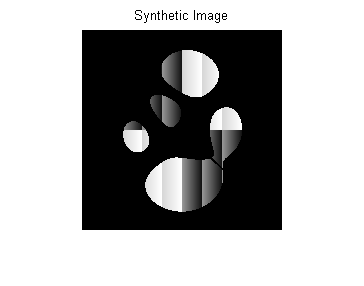
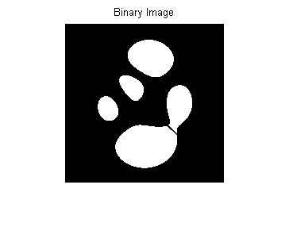
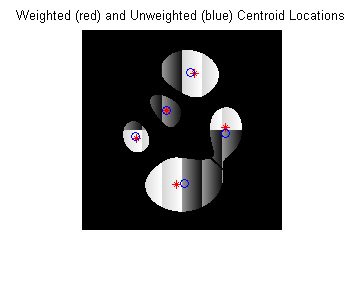
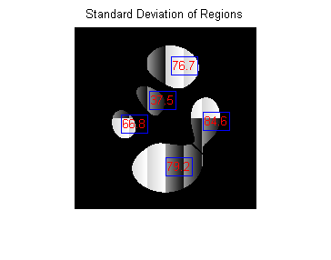
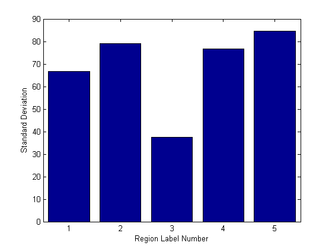
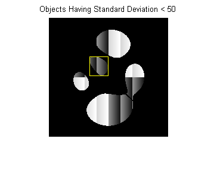

グレースケール イメージ内の領域の測定
関数 regionprops は、バイナリ イメージ内のオブジェクトの特性を測定するのに役立ちます。ドキュメンテーションの例にもありますが、このことを行う方法を示すデモがあります。
しかし、時々、"オリジナルの" グレースケール イメージ内のピクセル値を処理する必要があります。すなわち、手順は以下のようになると仮定します。
1. オブジェクトのバイナリ イメージを取得するために、グレースケール イメージを区分化します。
2. オリジナルのグレースケールのピクセル値は、バイナリ イメージ内の各オブジェクトに対応します。
このデモは、regionprops を使用して、このワークフローを行う方法を示します。
目次
手順 1:合成イメージの作成
いくつかの分離領域を含むグレースケール イメージを作成します。
I = propsSynthesizeImage;
imshow(I)
title('Synthetic Image')
 手順 2:バイナリ イメージの作成
イメージ内にオブジェクトを含んでいるバイナリ イメージを作成することによって、グレースケール イメージを分割します。
BW = I > 0;
imshow(BW)
title('Binary Image')
 手順 3:グレースケール イメージのピクセル値を使用したオブジェクト プロパティの計算
関数 regionprops は、'WeightedCentroid'、'MeanIntensity'、'MinIntensity'、'MaxIntensity' など、グレースケール イメージと共に使用できるいくつかのプロパティをサポートしています。これらのプロパティでは、計算にオブジェクトの元のピクセル値を使用します。
たとえば、regionprops を使用して、イメージのオブジェクトの中心と重み付き中心の両方を計算できます。オブジェクトと元のグレースケール イメージ (I) を含んでいるバイナリ イメージ (BW) を、引数として regionprops に渡す方法に注目します。
s = regionprops(BW, I, {'Centroid','WeightedCentroid'});
重み付き中心の位置と、重みのない中心位置を比較するには、元のイメージを表示したら、関数 hold および plot を使用してイメージの中心に重ね合わせます。
imshow(I) title('Weighted (red) and Unweighted (blue) Centroid Locations'); hold on numObj = numel(s); for k = 1 :numObj plot(s(k).WeightedCentroid(1), s(k).WeightedCentroid(2), 'r*'); plot(s(k).Centroid(1), s(k).Centroid(2), 'bo'); end hold off
手順 4:カスタム ピクセル値ベースのプロパティの計算
'PixelValues' プロパティを使用して、元のグレースケール イメージのピクセル値に基づいたカスタム計算を行うことができます。'PixelValues' プロパティは、領域内のピクセルのグレースケール値を含むベクトルを返します。
例として、各領域の標準偏差を計算します。
s = regionprops(BW, I, {'Centroid','PixelValues','BoundingBox'});
imshow(I);
title('Standard Deviation of Regions');
hold on
for k = 1 : numObj
s(k).StandardDeviation = std(double(s(k).PixelValues));
text(s(k).Centroid(1),s(k).Centroid(2), ...
sprintf('%2.1f', s(k).StandardDeviation), ...
'EdgeColor','b','Color','r');
end
hold off
 次の図は、イメージ内の各オブジェクトに重ね書きされた標準偏差測定を示しています。ラベル番号ごとに標準偏差を示すバー プロットなど、その他の方法でも結果を表示できます。
figure bar(1:numObj,[s.StandardDeviation]); xlabel('Region Label Number'); ylabel('Standard Deviation');
プロットを使用して、データを分割する方法を決定します。たとえば、以下のコードは 50 より小さい標準偏差を持つオブジェクトを識別します。
sStd = [s.StandardDeviation]; lowStd = find(sStd < 50); imshow(I); title('Objects Having Standard Deviation < 50'); hold on; for k = 1 : length(lowStd) rectangle('Position', s(lowStd(k)).BoundingBox, ... 'EdgeColor','y'); end hold off;